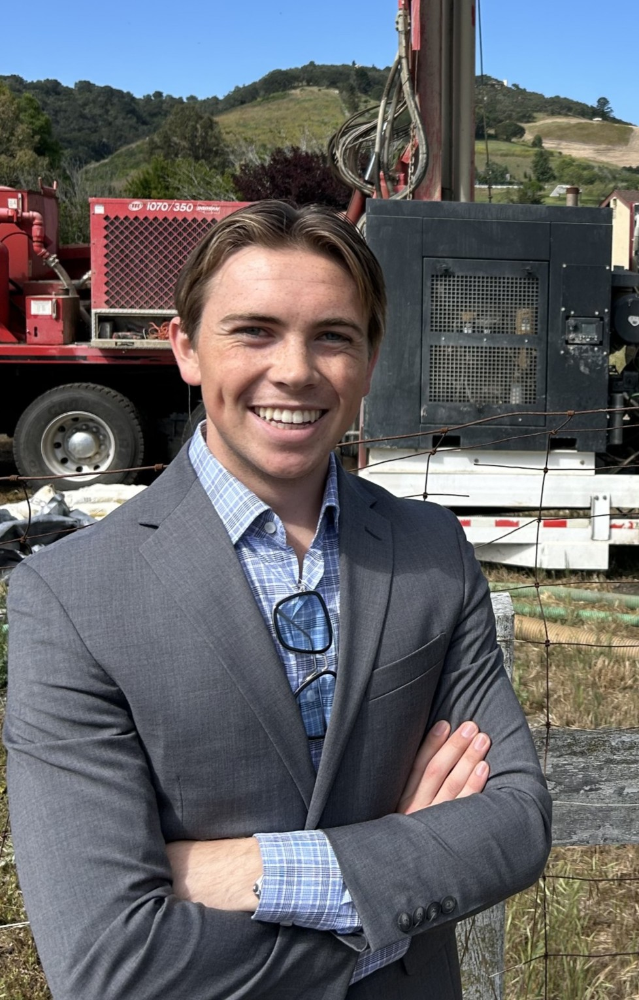

Andrew Chapin
3rd year MechE student at Cal Poly SLO excited by thermal systems, sustainable design, and project management.

Education
California Polytechnic State University, San Luis Obispo
Bachelor of Science in Mechanical Engineering, Minor in Accounting
Expected May 2028 | GPA: 3.83
Relevant Coursework: Heat Transfer, Fluid Mechanics, Thermodynamics, SolidWorks & Engineering Drafting, Managerial Accounting.
Experience Overview
Critchfield Mechanical Inc. Southern California — Project Engineering Intern (June 2026 – August 2026)
Focused on COR and RFI drafting, documentation upkeep, and ASHRAE-based HVAC design and estimation.
Premier Pump and Power — Product Development Intern (June 2025 – September 2025)
Supported product roadmap expansion into industrial chiller pumps, built MVP cavitation detection software using pressure and vibration sensors, and developed detailed 3D CAD renderings.
Chapin Design — Product Specialist & Fabrication Lead (June 2016 – September 2025)
Led parts and fabrication generating ~$250K in annual revenue, delivering projects for Cummins, Caterpillar Holt, and Southwest Products.
Aria Aerospace — Founder (April 2023 – May 2025)
Engineered, manufactured, and distributed custom flight safety and communication products for pilots nationwide.
Intake Screens Inc. — Welding Technician (June 2022 – September 2024)
Executed fabrication drawings to weld stainless steel components for municipal water systems and critical infrastructure.
Technical Skills
- Engineering & Fabrication: Autodesk Inventor, SolidWorks, Revit, Fusion 360, 3D Printing, TIG & MIG Welding, FEA & Deflection Testing
- Business & Analysis: Project Management, Client Relations, MATLAB, Excel, Accounting Fundamentals